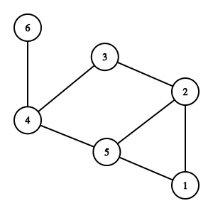

Chapter 15 Random Walks
A random walk starting at vertex \(v_0\) proceeds as follows: at each time \(t \geq 1\text{,}\) pick a random out-neighbor of \(v_{t-1}\) and walk to it. If vertex \(v_{t-1}\) has no out-neighbors, then we stay where we are.
A nice way to "stay where we are" is to add a loop to each vertex with no out-neighbors. So when \(k_i^{\mathrm{out}} = 0\text{,}\) we update the adjacency matrix so that \(a_{ii}=1\text{.}\) So we will assume that this is the case.
At each step, \(v_t\) is chosen uniformly from the out-neighbors of \(v_{t-1}\text{.}\) Using conditional probability notation, we have
The transition matrix \(P = ( P_{ij})\) collects the transition probabilities. The \(i\)th row contains all the transition probabilities starting at vertex \(i\text{.}\) Finally, we can write our transition matrix as
where \(D\) is the diagonal matrix with \(D_{ii} = \max \left\{ k_i^{\mathrm{out}}, 1 \right\}\) and \(A\) is the adjacency matrix.
Exercises Practice Problems
1. Random Walk on an Undirected Graph.
-
Find the transition matrix \(P\) of the following undirected graph. Hint: construct \(P\) row by row. And remember that when \(k_i^{\mathrm{out}}=0\text{,}\) we set \(a_{ii}=1\text{,}\) corresponding to the move "stay where we are."
\begin{equation*} P = \begin{bmatrix} 0 & 1/2 & 0 & 0 & 1/2 & 0 \\ 1/3 & 0 & 1/3 & 0 & 1/3 & 0 \\ 0 & 1/2 & 0 & 1/2 & 0 & 0 \\ 0 & 0 & 1/3 & 0 & 1/3 & 1/3 \\ 1/3 & 1/3 & 0 & 1/3 & 0 & 0 \\ 0 & 0 & 0 & 1 & 0 & 0 \\ \end{bmatrix} \end{equation*} -
Show that the all-ones vector \(\bone\) is a right eigenvector for eigenvalue \(\lambda=1\text{.}\) In other words, confirm that
\begin{equation*} P \bone = \bone. \end{equation*}What is the meaning of this equation? Solution.
Right multiplication by \(\bone\) sums all the exit probabilities from each vertex. So of course, these numbers sum to 1.
2. Long Term Behavior of a Random Walk of an Undirected Graph.
Consider the undirected graph from Problem 1. In your mind, repeatedly simulate a random walk starting from vertex 1. Follow this walk for about 15 steps or so. Where are you most likely to end up? Least likely? How do your observations relate to: the distance of the vertex from vertex 1? the degree of the vertex?
It is possible to end at any vertex. Vertex 6 is definitely visited the least at the end of the walk. Vertices with degree 3 seem to be the candidates for lots of visits at the end. But it is not clear how to compare these vertices with each other.
3. Powers of the Transition Matrix.
-
Here is the matrix \(P^2\) for the undirected graph in Problem 1.
\begin{equation*} P^2 = \begin{bmatrix} \frac{1}{3} & \frac{1}{6} & \frac{1}{6} & \frac{1}{6} & \frac{1}{6} & 0 \\[6pt] \frac{1}{9} & \frac{4}{9} & 0 & \frac{5}{18} & \frac{1}{6} & 0 \\[6pt] \frac{1}{6} & 0 & \frac{1}{3} & 0 & \frac{1}{3} & \frac{1}{6} \\[6pt] \frac{1}{9} & \frac{5}{18} & 0 & \frac{11}{18} & 0 & 0 \\[6pt] \frac{1}{9} & \frac{1}{6} & \frac{2}{9} & 0 & \frac{7}{18} & \frac{1}{9} \\[6pt] 0 & 0 & \frac{1}{3} & 0 & \frac{1}{3} & \frac{1}{3} \end{bmatrix} \end{equation*}What does row \(i\) tell you about the instruction "take two random steps from vertex \(i\text{?}\)" Solution.
The \((i,j)\) entry of \(P^2\) tells you the probability of a random walk starting at \(i\) ending at \(j\) after 2 steps.
Using part (a) as a guide, give an interpretation for row \(i\) of the matrix \(P^3\text{.}\) Solution.
The \((i,j)\) entry of \(P^3\) tells you the probability of a random walk starting at \(i\) ending at \(j\) after 3 steps.
What do the rows of matrix \(P^t\) describe? Solution.
The \((i,j)\) entry of \(P^t\) tells you the probability of a random walk starting at \(i\) ending at \(j\) after \(t\) steps.
-
For \(1 \leq i \leq 6\text{,}\) let \(\mathbf{e}_i\) denote the " elementary vector" whose \(j\)-th entry is
\begin{equation*} \mathbf{e}_i(j) = \left\{ \begin{array}{cl} 1 & i=j \\ 0 & \mbox{otherwise.} \end{array} \right. \end{equation*}In other words,
\begin{align*} \mathbf{e}_1&= \begin{bmatrix} 1 & 0 & 0 & 0 & 0 \end{bmatrix}\\ \mathbf{e}_2&= \begin{bmatrix} 0 & 1 & 0 & 0 & 0 \end{bmatrix}\\ \mathbf{e}_3&= \begin{bmatrix} 0 & 0 & 1 & 0 & 0 \end{bmatrix}\\ \mathbf{e}_4&= \begin{bmatrix} 0 & 0 & 0 & 1 & 0 \end{bmatrix}\\ \mathbf{e}_5&= \begin{bmatrix} 0 & 0 & 0 & 0 & 1 \end{bmatrix} \end{align*}What does the vector
\begin{equation*} \mathbf{e}_i \, P^t \end{equation*}describe? Solution.
The row vector \(\mathbf{e}_i \, P^t\) is row \(i\) of matrix \(P^t\text{.}\) As described in the previous part, the \(j\)th entry of this vector is the probability that you are at vertex \(j\) after taking \(t\) random steps from \(i\text{.}\)
4. A Left Eigenvector for an Undirected Graph.
Let \(P\) be the transition matrix for the graph in Problem 1. Consider the row vector
-
Check that the row vector \(\bv\) satisfies
\begin{equation*} \bv \,P = \bv. \end{equation*}We have a name for this equation: say that "\(\bv\) is a left eigenvector of the transition matrix \(P\) for eigenvalue \(\lambda=1\text{.}\)" (In other words, the eigenvectors that you are used to are actually right eigenvectors.) Solution.
We have
\begin{align*} & \begin{bmatrix} 2 & 3 & 2 & 3 & 3 & 1 \end{bmatrix} \begin{bmatrix} 0 & 1/2 & 0 & 0 & 1/2 & 0\\ 1/3 & 0 & 1/3 & 0 & 1/3 & 0\\ 0 & 1/2 & 0 & 1/2 & 0 & 0\\ 0 & 0 & 1/3 & 0 & 1/3 & 1/3\\ 1/3 & 1/3 & 0 & 1/3 & 0 & 0\\ 0 & 0 & 0 & 1 & 0 & 0\\ \end{bmatrix}\\ &= \begin{bmatrix} 2 & 3 & 2 & 3 & 3 & 1 \end{bmatrix} \end{align*} Relate the entries of \(\bv\) to the degrees of the graph. Solution.
The entries are the degrees of the vertices.
5. Stationary Distribution for an Undirected Graph.
A vector whose entries are nonnegative and sum to one correspond to a probability distribution on the vertices of \(G\text{.}\) A distribution \(\pi\) is stationary for \(P\) when
The amazing Perron-Frobenius Theorem (a very general theorem) can be applied to the transition matrix \(P\) for a connected, non-bipartite undirected graph.
In particular, it applies to the matrix \(P\) from the previous problems. And it tells us more information about the left eigenvector \(\bv\text{.}\) Two of the properties that it tells us are:
All of the other eigenvalues satisify \(| \lambda_i| < 1\text{.}\) In other words, \(\bv\) is the dominant eigenvector of \(P\text{.}\)
-
Assuming that we have scaled the row vector \(\bv\) so that its entries sum to 1, we have
\begin{align*} \lim_{t \rightarrow \infty} P^t \, = \, \bone \, \bv &= \begin{bmatrix} v_1 & v_2 & v_3 & v_4 & v_5 & v_6\\ v_1 & v_2 & v_3 & v_4 & v_5 & v_6\\ v_1 & v_2 & v_3 & v_4 & v_5 & v_6\\ v_1 & v_2 & v_3 & v_4 & v_5 & v_6\\ v_1 & v_2 & v_3 & v_4 & v_5 & v_6\\ v_1 & v_2 & v_3 & v_4 & v_5 & v_6\\ \end{bmatrix} \end{align*}where
\begin{equation*} \bv = \begin{bmatrix} v_1 & v_2 & v_3 & v_4 & v_5 & v_6 \end{bmatrix} = \begin{bmatrix} \frac{2}{14} & \frac{3}{14} & \frac{2}{14} & \frac{3}{14} & \frac{3}{14} & \frac{1}{14} \end{bmatrix}. \end{equation*}
Given this information:
What new properties do we now know about the vector (and probability distributrion) \(\bv\text{?}\) Solution.
The row vector \(\bv\) is the dominant eigenvector and every row of \(\lim_{t \rightarrow \infty} P^t\) converges to \(\pi\text{.}\)
After taking many random steps, what is the probability that we are at vertex \(i\text{?}\) Solution.
Row \(i\) of \(P^t\) is the probability distribution for a random walk started at vertex \(i\text{.}\) So this distribution converges to \(\pi\text{.}\) In particular, as \(t \rightarrow \infty\text{,}\) the probability that we are at vertex \(j\) is \(k_j/14\text{.}\)
6. Undirected Graphs: the General Case.
In the previous questions, you have focused on a particular undirected graph. Take a step back: these observations also hold in general!
Let \(G\) be a connected, aperiodic, undirected graph with adjacency matrix \(A\) and transition matrix \(P = D^{-1}A\text{.}\)
Explain why \(P \bone = \bone\text{.}\) Solution.
Row \(i\) contains the probabilities of stepping from \(i\) to a neighbor of vertex \(i\text{.}\) These probabiiities sum to 1.
-
Let \(\pi\) be the row vector
\begin{equation*} \pi = \begin{bmatrix} \frac{k_1}{2m} & \frac{k_2}{2m} & \cdots & \frac{k_n}{2m} \end{bmatrix} \end{equation*}where \(n=|V|\) and \(m = |E|\) and \(k_i\) is the degree of vertex \(i\text{.}\) Explain why
\begin{equation*} \pi P = \pi. \end{equation*}The \(i\)th entry of \(\pi P\) is
\begin{equation*} \sum_{j=1}^n \frac{k_j}{2m} \frac{a_{ij}}{k_j} = \frac{1}{2m} \sum_{j=1}^n a_{ij} = \frac{k_i}{2m}. \end{equation*} What is the meaning of the row vector \(\mathbf{e}_i \, P^t\text{,}\) where \(\mathbf{e}_i\) is the elementary vector from Problem 3(d)? Solution.
The row vector \(\mathbf{e}_i \, P^t \) is row \(i\) of \(P^t\text{.}\)
-
Explain why we have
\begin{equation*} \lim_{t \rightarrow \infty} \mathbf{e}_i \, P^t = \pi. \end{equation*}What does this equation mean for a random walk starting at vertex \(i\text{?}\) Solution.
Row \(i\) of \(P^t\) is the probability distribution for a random walk started at vertex \(i\text{.}\) This distribution converges to \(\pi\text{.}\) In particular, as \(t \rightarrow \infty\text{,}\) the probability that we are at vertex \(j\) is \(k_j/2m\text{.}\)
7. Random Walk on a Directed Graph.
Things don't work out as nicely on directed graphs. We will work through an example to see some of the strange behaviors that can arise.
Find the transition matrix \(P\) of the following directed graph. Hint: construct \(P\) row by row.
Solution.
Since vertex 2 has no out-neighbors, we add a self-loop.
\begin{equation*} P = \begin{bmatrix} 0 & 1/2 & 0 & 0 & 1/2 & 0 \\ 0 & 1 & 0& 0 & 0 & 0 \\ 1/2 & 1/2 & 0 & 0 & 0 & 0 \\ 0 & 0 & 1 & 0 & 0 & 0 \\ 0 & 0 & 0 & 0 & 0 & 1 \\ 0 & 0 & 0 & 0 & 1 & 0 \\ \end{bmatrix} \end{equation*}-
Confirm that
\begin{equation*} P \bone = \bone. \end{equation*}What is the meaning of this equation? Solution.
Right multiplication by \(\bone\) sums all the exit probabilities from each vertex. These numbers sum to 1, just as in the directed case. Note that adding the self-loop at vertex 2 is essential.
8. Long Term Behavior of a Random Walk on Directed Graph.
Now simulate some random walks on the directed graph from Problem 7. This time, start your walk at vertex 1. You should see a couple of different kinds of behavior for this directed graph. Describe what you observe.
At the end of the walk, we must be at vertex 2, 5 or 6. If we step to vertex 2 then we remain there forever. On the other hand, if we step from vertex 1 to vertex 5 then we we can never get out of this two vertex "spider trap."
9. An Eigenvector for a Directed Graph.
Let's continue to explore the digraph in Problem 7.
-
Check that the row vector
\begin{equation*} \begin{bmatrix} 0 & 0 & 0 & 0 & \frac{1}{2} & \frac{1}{2} \end{bmatrix} \end{equation*}satisfies
\begin{equation*} \bv \, P = \bv. \end{equation*}How does this relate to the behavior you saw in problem 4? What behavior doesn't this capture? Solution.
One of the two long-term outcomes we observed was ending up in the "spider trap" and then alternate between vertices 5 and 6. So in the long run, we spend half our time at vertex 5 and half our time at vertex 6. However, even in this case, the vector doesn't capture the periodic behavior of our long-term random walk. If we first step to vertex 5 at time \(T\text{,}\) then we will also be at vertex 5 at time \(T+2, T+4, T+6, \) etc, and we will be at vertex 6 at time \(T+1, T+3, T+5, \) etc.
Another behavior that we don't see in this vector is that we could have ended up at vertex 2, and then remained there forever. That doesn't even show up at all in this vector.
-
Find a different vector \(\bw \neq \bv\) such that
\begin{equation*} \bw \, P = \bw. \end{equation*}The vector
\begin{equation*} \bw = \begin{bmatrix} 0 & 1 & 0 & 0 & 0 & 0 \end{bmatrix} \end{equation*}is a solution to \(\bw \, P = \bw.\)
Pick \(a,b \in \R\) such that \(a+b=1\text{.}\) What can you say about the vector \(a \bv + b \bw\text{?}\) Solution.
We have
\begin{equation*} (a \bv + b\bw) P = a (\bv P) + b (\bw) P = a \bv + b \bw. \end{equation*}Indeed, they are both left eigenvectors for eigenvalue \(\lambda=1\text{.}\) So any linear combination is also a left eigenvector for eigenvalue \(\lambda=1\text{.}\)
As this problem shows, the eigenvectors for a weakly connected directed graph aren't enough to fully resolve the long-term behavior of random walks. This example has an infinite number of choices of \(a,b\) that produce distinct left eigenvectors. (In fact, the stationary distribution that we end up in depends upon the starting vertex.)